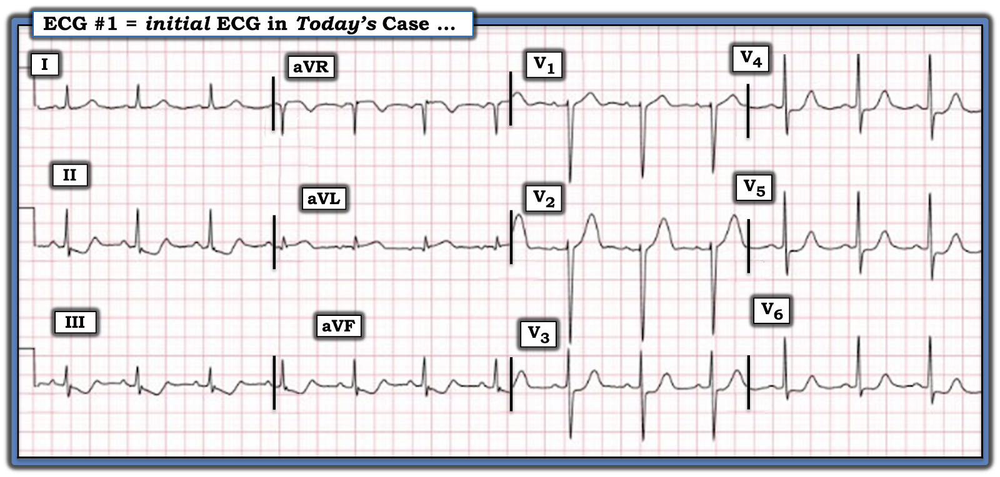
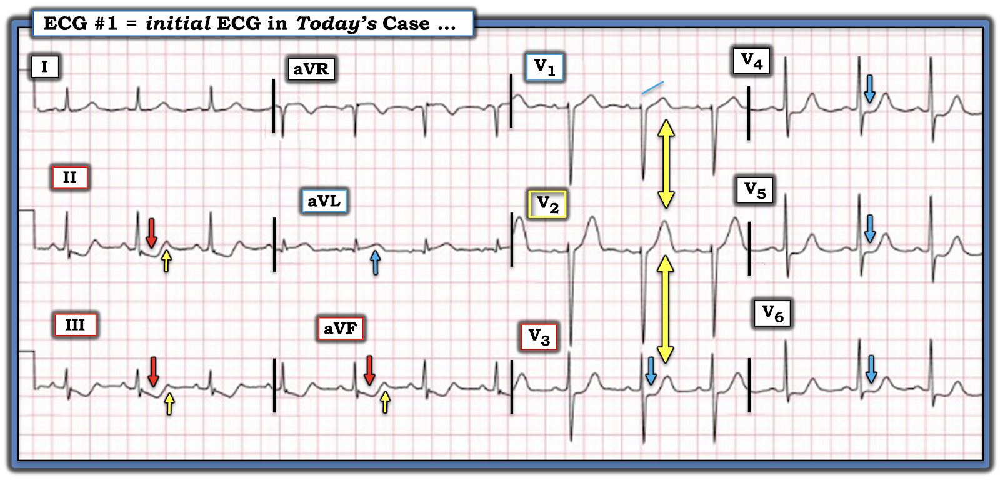
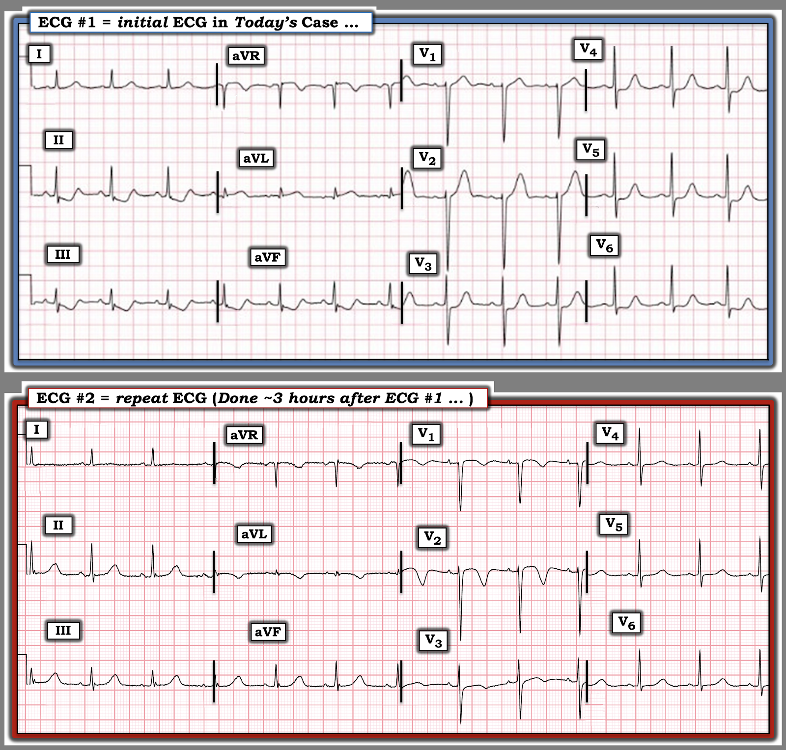

ECG Blog #523 — Có động mạch "thủ phạm" không?
Điện tâm đồ ở Hình 1 được ghi từ một phụ nữ lớn tuổi — đến khoa cấp cứu ED (Emergency Department) vì đau ngực CP (Chest Pain) bắt đầu khoảng ~2 giờ trước đó.
CÂU HỎI:
- Bạn sẽ diễn giải điện tâm đồ ở Hình 1 như thế nào?
- Bạn có kích hoạt phòng thông tim (cath lab) không?


SUY NGHĨ CỦA TÔI về CA BỆNH hôm nay:
Với bệnh sử đau ngực mới xuất hiện — đây là một điện tâm đồ cực kỳ đáng lo ngại:
- Nhịp là nhịp xoang, tần số ~80/phút. Về các khoảng — khoảng PR và thời gian QRS đều bình thường, QTc không quá mức giới hạn. Về lớn các buồng tim — sóng S >20 mm ở chuyển đạo V2 phù hợp với tiêu chuẩn điện thế của LVH (Xem Hình 7 trong Phần bổ sung của ECG Blog #73).
Về Thay đổi Q-R-S-T:
- Có một sóng Q nhỏ và hẹp ở chuyển đạo aVL.
- Tăng tiến sóng R (R wave progression) — bình thường (Có sóng r khởi đầu nhỏ nhưng rõ ràng ở cả hai chuyển đạo V1,V2 — với vùng chuyển tiếp xảy ra bình thường giữa chuyển đạo V3 và V4).
Các dấu hiệu đáng chú ý liên quan đến sóng ST-T:
- Sự chú ý của tôi lập tức dồn vào sóng ST-T ở 3 chuyển đạo dưới — các chuyển đạo này cho thấy đoạn ST thẳng đuỗn và chênh xuống dốc xuống rất bắt mắt (các mũi tên ĐỎ ở chuyển đạo II,III,aVF trong Hình 2). Mỗi chuyển đạo này đều có phần cuối sóng T dương (các mũi tên VÀNG hướng lên) — và hình dạng sóng T xuống-lên này ở một bệnh nhân đau ngực mới xuất hiện là một dấu hiệu đặc biệt đáng lo ngại của tình trạng tối cấp.
- Mối lo ngại của chúng ta còn được củng cố bởi hình dạng sóng ST-T tối cấp ở chuyển đạo aVL (với ST thẳng đuỗn, ST chênh lên tinh tế nhưng có thật nếu xét đến biên độ nhỏ của QRS — và một sóng T “phình to” không tương xứng với đáy rộng).
Ở các chuyển đạo trước ngực:
- Chuyển đạo V1 đáng chú ý với ST thẳng đuỗn — điều này càng đặc biệt đáng chú ý khi xét đến tình trạng ST chênh xuống dạng nằm ngang 1-2 mm, rõ ràng bất thường, ở chuyển đạo V3,V4,V5,V6 (các mũi tên XANH ở những chuyển đạo này). Mỗi chuyển đạo trong 4 chuyển đạo trước ngực này đều có phần cuối sóng T dương đáng kể — điều này, ở bệnh nhân đau ngực mới xuất hiện, gợi ý mạnh tình trạng tối cấp.
- Tôi thấy chuyển đạo V2 đặc biệt thú vị vì là một chuyển đạo “chuyển tiếp” — ở chỗ nó không có điểm J chênh xuống mà cũng không chênh lên. Nhiều khả năng nhất là vì chuyển đạo V2 nằm giữa chuyển đạo V1 (đáng chú ý với ST thẳng đuỗn trông như tối cấp) — và các chuyển đạo V3,V4,V5,V6 (mỗi chuyển đạo đều cho thấy ST dẹt và chênh xuống không thể nhầm lẫn, kèm phần cuối sóng T dương).
- Cuối cùng — có ST chênh lên nhẹ nhưng có thật ở chuyển đạo aVR.


==========================
Tổng Hợp Lại Tất cả:
- Tôi sẽ kích hoạt phòng thông tim ngay lập tức. Bệnh sử đau ngực mới khởi phát ở người phụ nữ lớn tuổi này, với điện tâm đồ ban đầu có bất thường sóng ST-T đáng kể ở không dưới 11/12 chuyển đạo, cho thấy một biến cố tim cấp cho đến khi chứng minh được điều ngược lại.
Câu hỏi đặt ra là động mạch “thủ phạm” có thể là động mạch nào?
- Chuyển đạo duy nhất có ST chênh lên là aVL. Khi không có ST chênh lên ở các chuyển đạo bên khác — tôi cho rằng tắc cấp động mạch mũ trái LCx (Left Circumflex) ít có khả năng hơn.
- ST chênh lên thường thấy ở nhiều chuyển đạo trước ngực khi tắc đoạn gần động mạch LAD (Left Anterior Descending — động mạch liên thất trước) — nhưng không có ST chênh lên ở các chuyển đạo trước trên điện tâm đồ ban đầu của ca hôm nay.
- Thay vào đó, ta thấy ST thẳng đuỗn ở chuyển đạo V1 — với các dấu hiệu nổi bật trong Hình 2 là ST chênh xuống trông rất cấp tính kèm phần cuối sóng T dương ở 7 chuyển đạo (chuyển đạo II,III,aVF — và V3,V4,V5,V6) — với chuyển đạo chuyển tiếp V2 — và ST chênh lên ở chuyển đạo aVR.
- ĐIỂM THEN CHỐT (PEARL) #1: Cách giải thích hợp lý nhất cho chuỗi bất thường sóng ST-T trông cấp tính này mà không gợi ý một động mạch “thủ phạm” cụ thể — là có bệnh nhiều nhánh mạch vành nặng.
- Tôi nghi ngờ tắc cấp LAD dựa trên các dấu hiệu ST thẳng đuỗn ở V1 + chuyển đạo chuyển tiếp ở V2 cùng với ST chênh xuống ở các chuyển đạo trước ngực bên, gợi ý hình ảnh xoáy trước tim (Precordial Swirl) ở một bệnh nhân có bệnh nhiều nhánh mạch vành đáng kể (Xem ECG Blog #380). Các dấu hiệu hỗ trợ gồm ST chênh lên ở aVL kèm ST chênh xuống soi gương ở các chuyển đạo dưới là phù hợp với tắc đoạn gần LAD — còn tính lan tỏa của ST chênh xuống phản ánh các hiệu ứng làm suy giảm (attenuation) không thể lý giải hết do tổn thương nhiều nhánh mạch vành.
- ĐIỀU CỐT LÕI: Tất cả những điều này đều không quan trọng. Điều đáng kể chỉ đơn giản là cần thông tim kịp thời và can thiệp mạch vành qua da (PCI). Giải phẫu cụ thể sẽ được thông tim làm rõ.
==========================
CA BỆNH Tiếp diễn:
- Đã tiến hành thông tim — cho thấy bệnh nhiều nhánh mạch vành nặng (với tổn thương 80% tại lỗ vào thân chung động mạch vành trái — tổn thương “thủ phạm” 95% ở đoạn giữa LAD + bệnh động mạch vành phải RCA).
- Troponin I độ nhạy cao (hs-Troponin-I) ban đầu tăng ở mức giới hạn. Troponin lặp lại tăng rõ rệt.
ĐIỂM THEN CHỐT #2:
Kết quả Troponin trong ca hôm nay không quan trọng. Lý do là bất kể kết quả xét nghiệm Troponin lần 1 và lần 2 ra sao — vẫn cần thông tim kịp thời và PCI, căn cứ vào bệnh sử đau ngực mới khởi phát và điện tâm đồ ban đầu của ca hôm nay cho thấy thay đổi sóng ST-T trông cấp tính lan tỏa ở 11/12 chuyển đạo!
- Troponin độ nhạy cao ban đầu có thể âm tính hoặc không có giá trị chẩn đoán ở tới 25% bệnh nhân STEMI cấp (Wereski và cs. — JAMA Cards 5(11):1302, 2020).
- “Thời gian là cơ tim” (Time is Muscle). Như đã nhiều lần được chứng minh trên ECG Blog của BS Smith (Xem bình luận của tôi trong bài đăng ngày 8 tháng Hai năm 2026) — Lợi ích lớn nhất của tái tưới máu đạt được trong vòng 4 giờ đầu sau khi tắc động mạch vành cấp (và cứ mỗi 2 giờ chậm trễ thì lượng cơ tim bị nhồi máu tăng thêm 60%).
- Giá trị Troponin huyết thanh là một chiếc gương chiếu hậu phản ánh những gì đã xảy ra — chứ không phải những gì sắp xảy ra.
- ĐIỂM THEN CHỐT #3: Quyết định thông tim trong ca hôm nay có thể đưa ra ngay khi nhìn thấy điện tâm đồ ban đầu.
==========================
Một điện tâm đồ thứ 2 được ghi khoảng ~3 giờ sau điện tâm đồ #1 (trình bày ở Hình 3):
- Điện tâm đồ #2 được ghi trước khi thông tim — vào thời điểm triệu chứng của bệnh nhân đã giảm. Bệnh nhân đang được dùng liệu pháp kháng tiểu cầu kép (DAPT) và Heparin.
CÂU HỎI:
- Biết rằng đau ngực của bệnh nhân đã giảm vào lúc ghi điện tâm đồ #2 — Bạn sẽ diễn giải điện tâm đồ ghi lại này như thế nào?


SUY NGHĨ CỦA TÔI về điện tâm đồ #2:
So với điện tâm đồ #1 — điện tâm đồ ghi lại ở Hình 3 cho thấy các thay đổi tái tưới máu ở gần như tất cả các chuyển đạo trước đó trông cấp tính:
- Đáng chú ý nhất trên điện tâm đồ #2 là ST dạng vòm (coving) ở các chuyển đạo trước, nay kèm sóng T đảo ngược sâu, đối xứng ở chuyển đạo V2.
- Tình trạng ST chênh xuống nằm ngang trước đây ở chuyển đạo V3,V4,V5,V6 về cơ bản đã hết.
- Nay thấy các thay đổi tái tưới máu soi gương ở các chuyển đạo dưới — trong đó ST chênh xuống dốc xuống đã được thay bằng sóng T dương cao, “đồ sộ”.
- Có sóng T đảo ngược sâu, đối xứng ở chuyển đạo aVL.
- ĐIỂM THEN CHỐT #4: Đặc biệt khi xét đến việc đau ngực đã giảm — tôi diễn giải các thay đổi tiến triển trên điện tâm đồ #2 là khẳng định tắc cấp LAD là động mạch “thủ phạm” ở bệnh nhân có nền bệnh nhiều nhánh mạch vành này.
==================================
Lời cảm ơn: Tôi xin cảm ơn Chun-Hung Chen (đến từ Taichung City, Taiwan) đã chia sẻ ca bệnh và bản ghi này.
==================================